Our products
Lithium
Spodumene
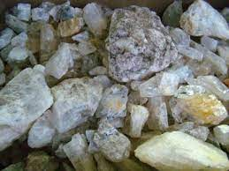A lithium-rich mineral that occurs in a variety of colors, including green, pink, and yellow. It is a popular gemstone known for its transparency and vitreous luster.
Kunzite
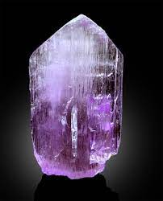A pale pink to lilac-colored gemstone belonging to the spodumene family. It is prized for its delicate color and is often used in jewelry for its soft, feminine appeal.
Lepidolite
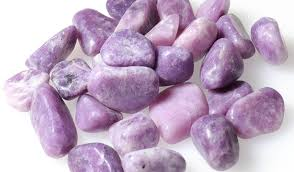A lilac or rose-colored mineral that belongs to the mica group. It is valued for its shimmering appearance and is often used as a decorative stone or in the production of jewelry and ornamental items.
Copper ore
Malachites
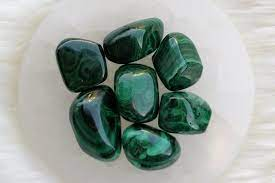A vibrant green mineral known for its swirling patterns and is often used in jewelry and ornamental carvings.
Azurite
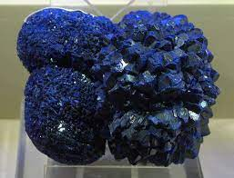A deep blue mineral that forms in striking crystal formations and is prized for its intense color and use in jewelry and as a pigment in paints.
Native copper

A naturally occurring metallic element that is often found in pure, solid form and is valued for its lustrous appearance and use in decorative items and electrical applications.
Culprit
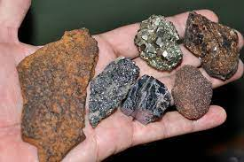A deep red mineral that is prized for its rich color and is often used as a gemstone in jewelry and as a pigment in paints.
Iron ore
Magnetite
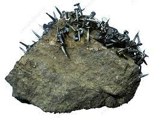A black, lustrous mineral with magnetic properties, commonly used in compasses and as an iron ore in steel production.
Hematite
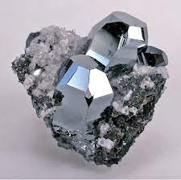A shiny, metallic gray to black mineral known for its red streak and used as a pigment in paints, jewelry, and as an iron ore.
Nickel ore
Pentlandite
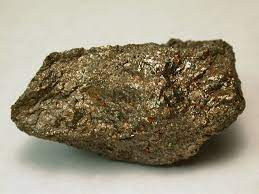A brassy yellow mineral that is the most important ore of nickel, often found in association with other sulfide minerals.
Laterites
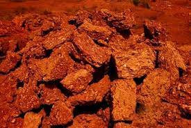Are weathered, iron-rich soils that are formed in hot and wet tropical environments, often containing valuable deposits of nickel and other metals.
Gemstones
Emerlad
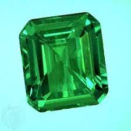A vibrant green gemstone known for its rich color and rarity.
Sapphires
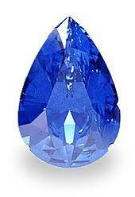A precious gemstone that comes in a variety of colors, with the most prized being deep blue.
Ruby
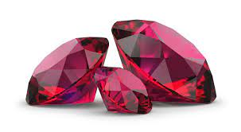A stunning red gemstone symbolizing love and passion, known for its intense color and durability.
Garnet
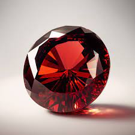A group of gemstones that come in a range of colors, with deep red being the most well-known.
Amethyst
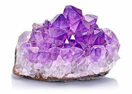A beautiful purple gemstone believed to have calming and healing properties.
Aquamarine
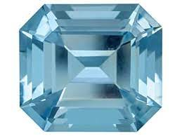A light blue to blue-green gemstone reminiscent of the sea, often associated with tranquility and clarity.